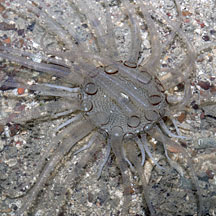
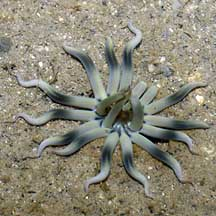
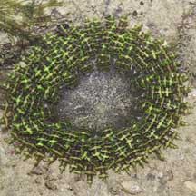
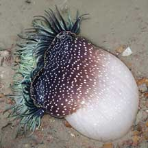
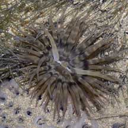
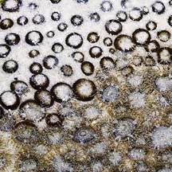
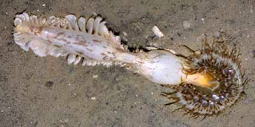
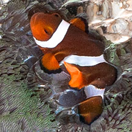

|
|
| sea anemones text index | photo index |
| Phylum Cnidaria > Class Anthozoa > Subclass Zoantharia/Hexacorallia > Order Actiniaria |
| Sea
anemones Order Actiniaria updated Dec 2024
Where seen? A wide variety of anemones can be seen on all our shores. Tiny anemones often wedge in crevices on rocky shores. Sandy shores teem with anemones; some small and well camouflaged or hidden in the sand. Seagrass meadows often have carpet anemones that may be bigger than your face! Large colourful anemones are also common in coral rubble areas. Anemones may also settle on shells occupied by hermit crabs or even living snails. What are sea anemones? Sea anemones are to Phylum Cnidaria, which includes jellyfishes and corals. Anemones belong to the Class Anthozoa that includes cerianthids and hard corals. There are about 1,350 known species of anemones. They are found from deep to shallow waters, attached to hard surfaces or burrowing into the ground. Features: Most anemones are small, from 1.5-10cm long and 1-5cm in diameter. But some can be 50cm in diameter or more! Unlike hard corals which are colonies of small polyps connected to one another that produce a hard skeleton, anemones are larger solitary polyps that don't produce a hard skeleton. Like jellyfish and other cnidarians, anemones have tentacles with stingers. What we first notice of the anemone is a broad, flat disk. This is called the oral disk because that is where the mouth is, at the centre of disk. The mouth is usually a slit. Anemones don't have teeth. Stingers! The upper side of the oral disk is usually covered with lots of hollow tentacles. The tentacles are armed with stingers that are used for feeding and self-defence. Many anemones have nematocysts or stingers that can inject toxins. They may also have a kind of stinger that produces a long adhesive thread (called spirocysts). These make the tentacles sticky and are used to entangle hard-bodied prey such as crabs that may blunder into them. Stingers are concentrated on the tentacles. |
 The glass anemone has very long tentacles. Beting Bronok, Jun 10 |
 The Wiggly reef star anemone has few tentacles. Pulau Hantu, Apr 06 |
 The Phymanthus anemone has branched tentacles. Sentosa, May 08 |
| Getting a grip: Most anemones don't move around a lot. Anemones also have a long smooth body column. The other end of
the body column may end in a flat muscular pedal disk that attaches
to a hard surface. Some anemones can move slowly by gliding
on the pedal disk. The Swimming anemone can indeed swim, but can also cling in place with its pedal disk. Many anemones burrow in sand, mud or crevices in rocks or coral rubble. These may have a bulbous tip at the end of the body column that helps them dig down and stay anchored. Part or most of the body column may be buried or hidden. The body column may have bumps or spots (called verrucae). In some, these are sticky, to help the animal grip the surroundings where it is buried, or to keep the oral disk spread out, flat against a hard surface. In most anemones, the body column can retract towards the base to hide from predators or minimise exposure at low tide. Most can also tuck their tentacles and oral disk into the body column. When small anemones do this, they look like beads of jelly. Others can simply retract their entire bodies into a hole, crevice or into the sand. This is usually done by expelling fluids so that the tentacles and body deflate like balloons. To inflate again, anemones have special body structures to pump in and retain water. |
 Long body column of a burrowing Snaky anemone. Beting Bronok, Aug 05 |
 The Swimming anemone really does swim! Pulau Sekudu, Jun 06 |
 Some anemones are tiny and lie half buried in the sand. Don't step on them! Chek Jawa, Oct 04 |
| Sometimes mistaken for soft
corals. Some large anemones and large leathery and flowery
soft corals may be mistaken for one another. Here's more on how
to tell apart large soft cnidarians on the shore. Some animals look like anemones but are not, e.g., cerianthids, corallimorphs and zoanthids. Here's more on how to tell apart animals with a ring of smooth tentacles. |
 Carpet anemone eating a sand dollar Chek Jawa, Feb 04 |
 A tiger anemone attempting to swallow a sea pen! Changi, Jul 04 |
| What do they eat? Anemones
may use their tentacles or mucus to trap small particles, detritus
and plankton from the water. Larger anemones can capture and swallow prey such as fishes
whole. Anemones have stingers like other
cnidarians. Prey is captured and immobilised with these stingers.
Tentacles may push larger prey into the central mouth. The edges of
the mouth may be inflated into 'lips' that pucker to hold prey as
it is swallowed. The mouth and body column can expand wide to accommodate
the prey whole. Or the anemone may fold its oral disk over the prey.
Like other cnidarians, the anemone lacks an anus. So it has to
spit out any indigestible bits through the mouth. Farm in their arms: Many anemones also harbour symbiotic single-celled algae (called zooxanthellae) in their tentacles. The algae undergo photosynthesis to produce food from sunlight. The food produced is shared with the anemone, which in return provides the algae with shelter and minerals. The zooxanthellae are believed to give anemone tentacles their brown or greenish tinge. Anemone friends: Some anemones may live with other animals such as hermit crabs and living snails. Other animals have adapted to live among the tentacles of anemones. The Anemonefish (Amphiprion sp.) is coated with mucus that does not trigger off the host anemone's stingers. Other creatures that also make their homes in anemones include anemone shrimps (Periclimenes sp.). Should I 'save' animals trapped in an anemone? Please don't. If you do, you will be depriving the anemone of a meal. It might not get so lucky again for a while. The animal that you 'saved' might also not survive if it was badly stung by the anemone. Should I feed the anemones? Please don't. Anemones know how to feed themselves. You might hurt the anemone if you put the wrong thing on it, for example a toxic animal. If you put another living animal on an anemone you will be hurting two animals. Please don't put objects such as litter or dead crabs on an anemone either. |
|
 The False clown anemonefish can live happily in the carpet anemone that would eat any other fish. Kusu Island, Jun 04 |

| Anemone
Babies: Most anemones are hermaphrodites,
but act as one gender at any one time. That is, they produce either
sperm or eggs during one reproductive period. Fertilisation may be
external, or the eggs may be fertilised inside the anemone. The eggs
develop into free-swimming larvae that eventually settle to the bottom
and develop tentacles. Some anemones can reproduce asexually by detaching a portion of their body, such as the pedal disk, or even by dividing into two. The detached portion eventually grows into new anemones. The Swimming anemone can regenerate a new anemone from a dropped tentacle. But not all anemones do this, so please don't mutilate anemones. Human Uses: Unfortunately, these beautiful creatures are popular in the live aquarium trade and many are harvested from the wild for this trade. Studies of their fascinating structures have medical applications, such as the use of their stingers to inject substances through human skin. Status and threats: A few of our anemones are listed among the endangered animals of Singapore. Llike other animals harvested for the live aquarium trade, most die before they can reach the retailers. Without professional care, most die soon after they are sold. Those that do survive are unlikely to breed successfully. Like other creatures of the intertidal zone, they are affected by human activities such as reclamation and pollution. Trampling by careless visitors, and over-collection also have an impact on local populations. |
| Order
Actiniaria recorded for Singapore text index and photo index of sea anemones seen on Singapore shores Checklist of Cnidaria (non-Sclerectinia) Species with their Category of Threat Status for Singapore by Yap Wei Liang Nicholas, Oh Ren Min, Iffah Iesa in G.W.H. Davidson, J.W.M. Gan, D. Huang, W.S. Hwang, S.K.Y. Lum, D.C.J. Yeo, May 2024. The Singapore Red Data Book: Threatened plants and animals of Singapore. 3rd edition. National Parks Board. 663 pp. Anemones listed in the Red Data Book 2024 which are NOT on this website
|
Links
References
|